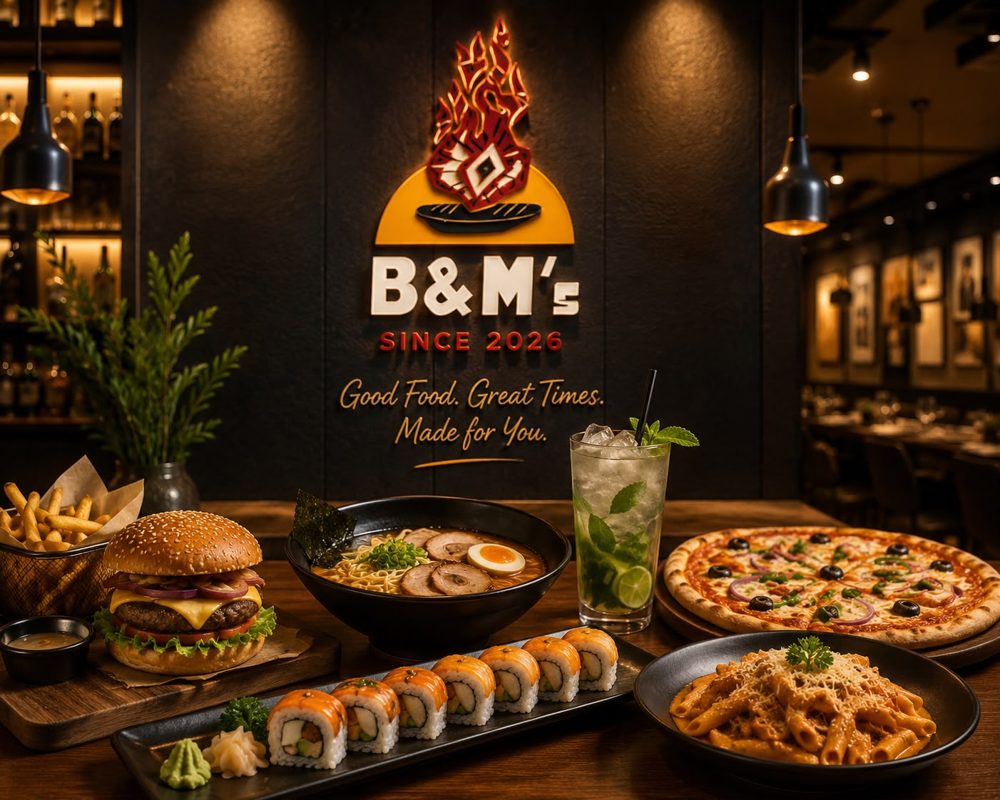
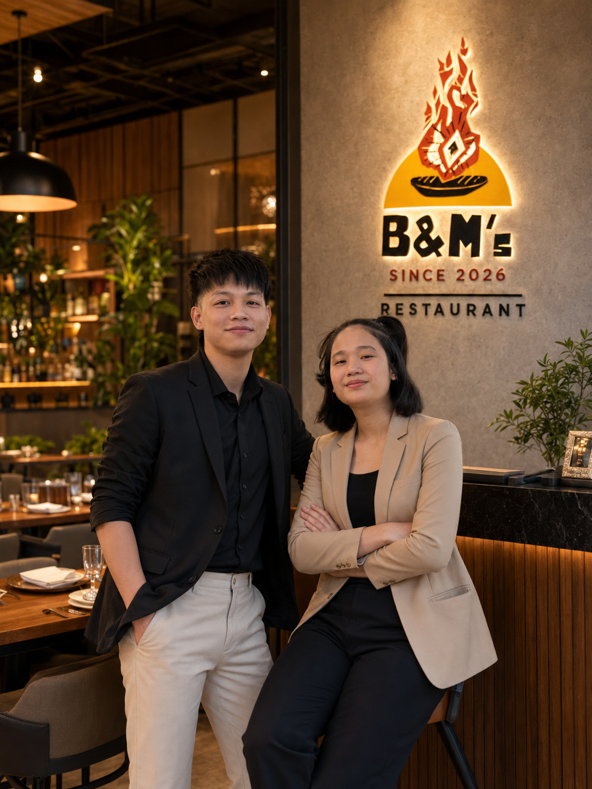
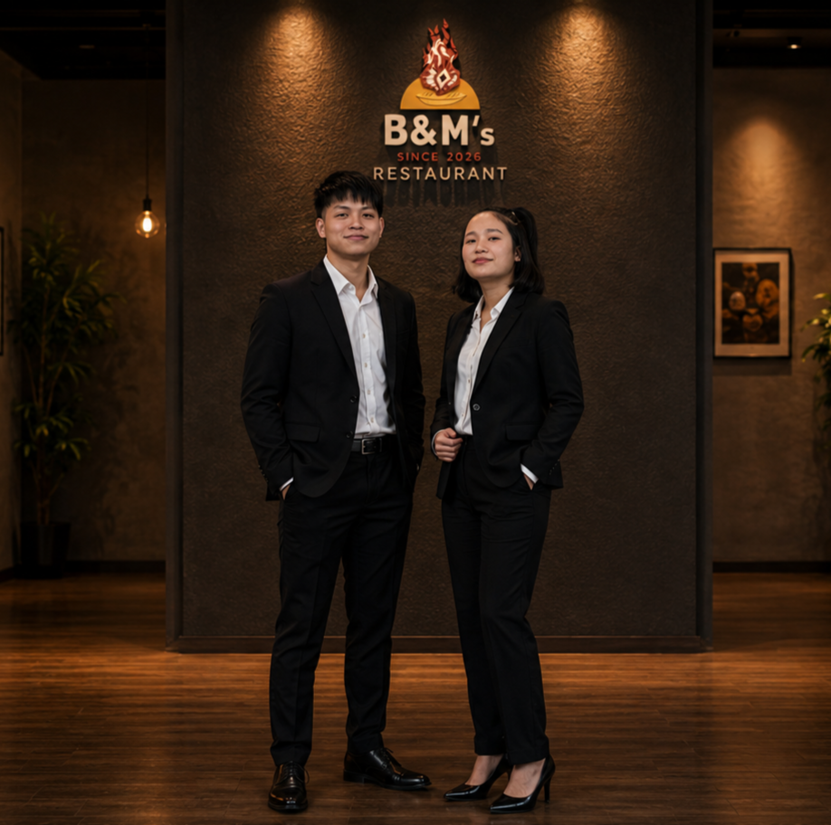

At B&M’s, every meal tells a story. From humble beginnings in the picturesque town of Aalo, Arunachal
Pradesh, we have grown with one simple goal—to bring people together through unforgettable food and
heartfelt hospitality. Every dish we serve reflects our passion for quality, creativity, and the joy of
sharing a great meal.

B&M's Interior
Our Story
Every great journey begins with a dream, and the story of B&M’s is no different.
Although B&M’s Restaurant officially opened its doors in 2026, the vision behind it was
born many years
earlier. Founded by Bado Nabam and Marpi Dirchi, a husband-and-wife
team united by their love for food,
family, and hospitality, the restaurant was built on the belief that a great meal has the power to bring
people together and create lasting memories.
Growing up in the beautiful hills of Aalo, Arunachal Pradesh, they were inspired by the
warmth of
home-cooked meals, local traditions, and the joy of gathering around the dining table with family and
friends. As they traveled and explored cuisines from different cultures, they dreamed of creating a
restaurant where people could enjoy flavors from around the world without losing the comfort and warmth
of home.
That dream became reality in 2026 when they opened the first B&M’s Restaurant. What started as a small
neighborhood restaurant quickly became a favorite destination for families, students, travelers, and
food lovers. With every satisfied guest, the dream grew even bigger.
Today, B&M’s proudly serves a diverse menu featuring handcrafted burgers, authentic ramen, freshly rolled
sushi, stone-baked pizzas, flavorful burritos, comforting pasta, and refreshing beverages. While our
menu has expanded, our values remain the same—fresh ingredients, genuine hospitality, and a commitment
to making every guest feel like family.
Our journey has only just begun, and every guest who walks through our doors becomes part of the B&M’s
story.


B&M's Founders, Bado Nabam(left) and Marpi Dirchi(right)
"Great food has the power to bring people together. That belief is the heart of B&M's Restaurant"
Note: This is a fictional restaurant for demonstration purposes only.
Our Mission
Our mission is simple:
To make B&M’s Restaurant a globally recognized dining destination while never losing the
warmth of our hometown roots.
We aspire to bring people together through exceptional food, genuine hospitality, and unforgettable
dining experiences. Every recipe is crafted with passion, every ingredient is carefully selected,
and every guest is treated like family.
Our long-term dream is to expand B&M’s Restaurant across cities and countries so that everyone, no
matter where they are, can enjoy at least one memorable bite of our food.
Because we believe that great food has no borders—and neither should great hospitality.
Meet Our Team
Our team is dedicated to providing an exceptional dining experience. With diverse backgrounds and shared
passion for great food, we work together to create a welcoming atmosphere where every guest feels
valued.
Head Chef: Marbi Dirchi
With years of culinary passion and creativity, Marbi Dirchi leads our kitchen with precision,
dedication, and innovation. Every recipe is thoughtfully crafted using fresh ingredients and
authentic techniques, ensuring that each meal delivers both quality and unforgettable flavor.
Marbi Dirchi- Head Chef B&M's
Sous Chef: Jumgam Riba
Working alongside the Head Chef, Jumgam Riba oversees the daily kitchen operations and ensures every
dish is prepared with consistency, care, and attention to detail. His dedication helps maintain the
high standards that define B&M’s Restaurant.
Jumgam Riba- Sous Chef B&M's
Head Restaurant Manager: Bomken Riba
Bomken Riba serves as the restaurant manager at B&M’s, overseeing daily operations and helping ensure
every guest enjoys a welcoming and memorable experience. His dedication, leadership, and attention
to detail support the standards that define B&M’s as it continues to grow.
Bomken Riba- B&M's Manager
Our Hospitality Team
Great food deserves exceptional service. Our hospitality team is the face of B&M's Restaurant, ensuring
every
guest feels welcomed from the moment they arrive until the moment they leave. Their professionalism,
friendly
attitude, and attention to detail help create a comfortable and memorable dining experience for
everyone.
Restaurant Waitstaff
Our well-trained waiters and waitresses are committed to providing attentive and courteous service.
They
assist guests with menu recommendations, take orders accurately, serve meals promptly, and ensure
every
table enjoys a seamless dining experience.
Our friendly hospitality team ready to serve every guest with a smile.
Why Guests Love B&M's
Fresh ingredients prepared daily
Diverse menu featuring cuisines from around the world
Warm and welcoming atmosphere
Friendly, attentive service
Clean, modern, family-friendly environment
Commitment to quality, consistency, and customer satisfaction